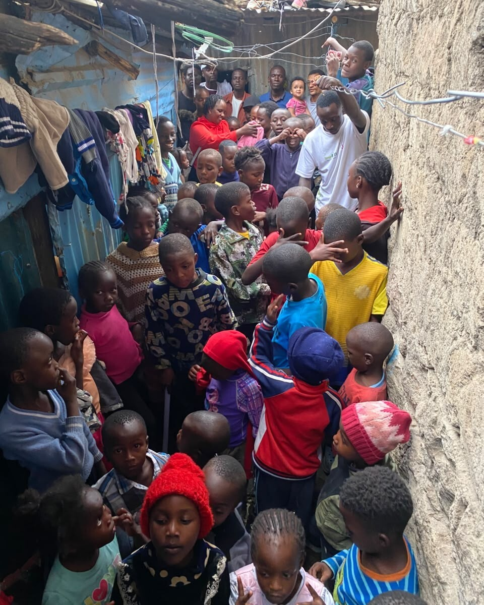
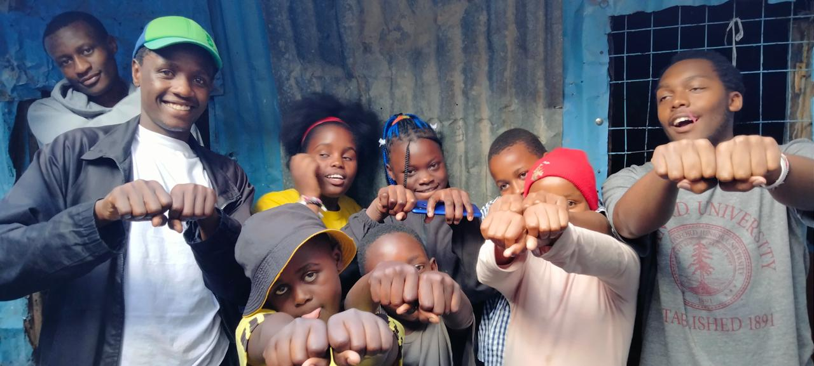
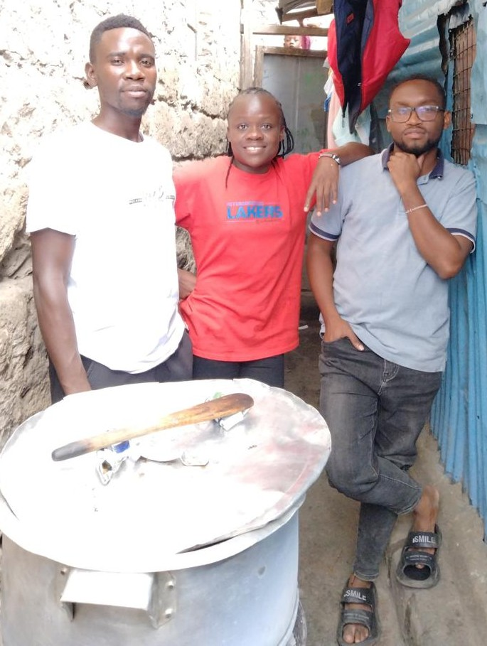
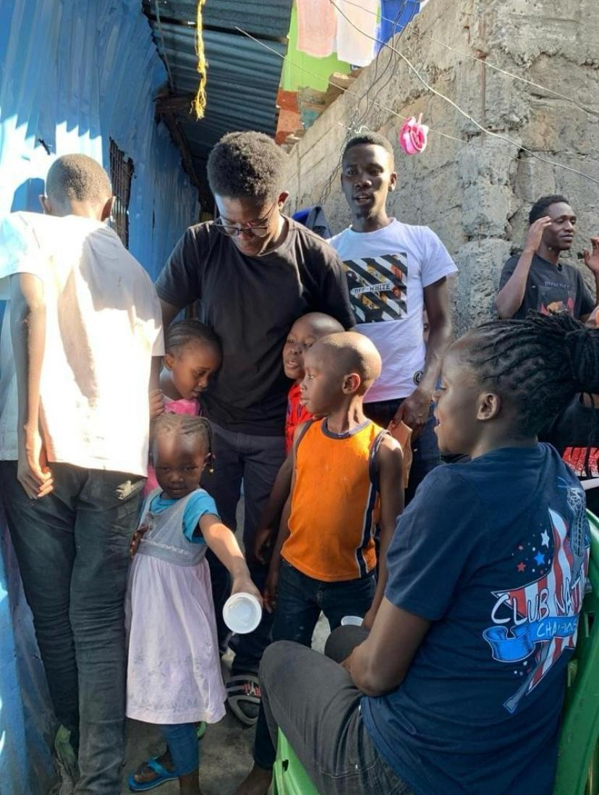

"One visit can mean so much."
A short visit and a few kind words gave one child the confidence to keep going with school — a small gesture that rippled further than we expected.
Read more →Bringing hope, compassion and practical support to children, families and communities that need it most — one visit, one conversation, one act of kindness at a time.

Community visits carried out across children's homes and neighbourhoods this year.
Every number here represents a person we sat with, listened to, or helped carry something heavy. We keep this list honest and update it as our work grows.


Mackline & Friends Foundation exists to bring people together to support children, families and vulnerable members of our community. We believe lasting change starts with showing up, listening, and doing the small things consistently.
Our work is simple in spirit and serious in practice: visit children's homes, reach families who are struggling, and organize community initiatives that remind people they are not alone.

Visiting children's homes and spending meaningful time with children while providing practical support.
Learn more →
Reaching vulnerable families and individuals within the community.
Learn more →
Providing essential assistance to people facing difficult circumstances.
Learn more →Supporting people with basic necessities whenever resources allow.
Learn more →
Supporting children's wellbeing, education and development for the long run.
Learn more →"One visit can mean so much."
A short visit and a few kind words gave one child the confidence to keep going with school — a small gesture that rippled further than we expected.
Read more →
"A meal shared is a bond formed."
When a family faced a difficult month, a food delivery from our volunteers came with something more valuable — the reminder that neighbours notice.
Read more →
"Community shows up for community."
A neighbourhood clean-up turned into an afternoon of shared meals and conversation — proof that outreach works best when it belongs to everyone involved.
Read more →.
Whether it's an hour of your time, a bag of essentials, or spreading the word — every contribution moves us closer to the people who need it.